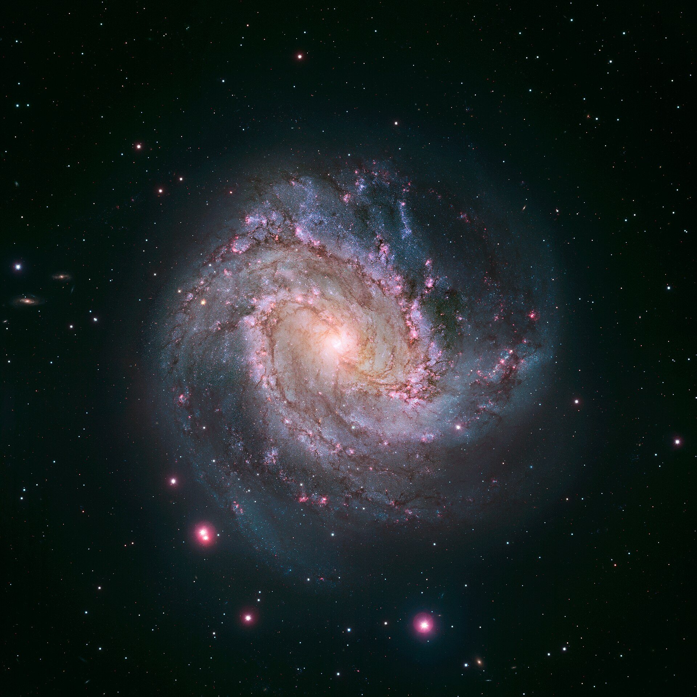
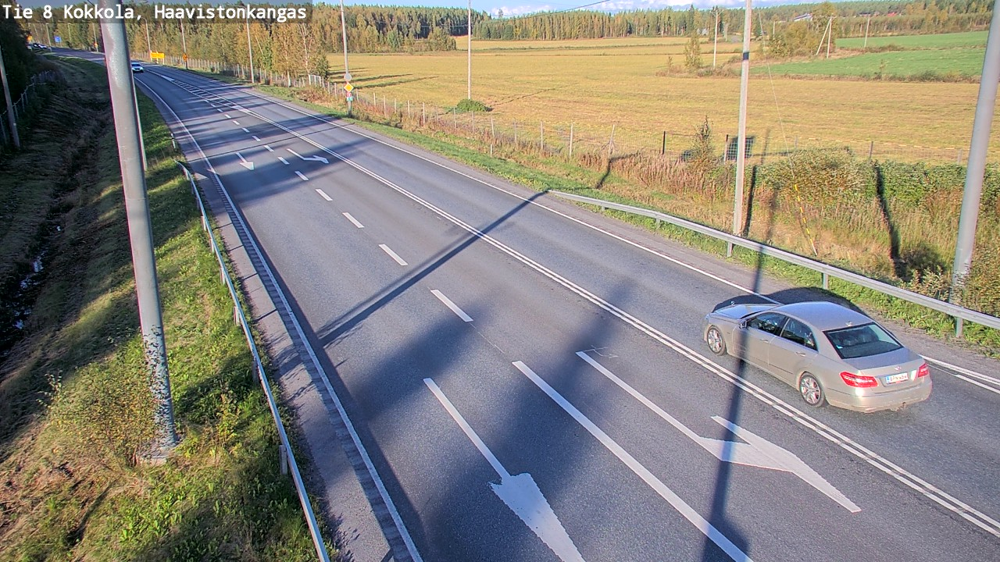
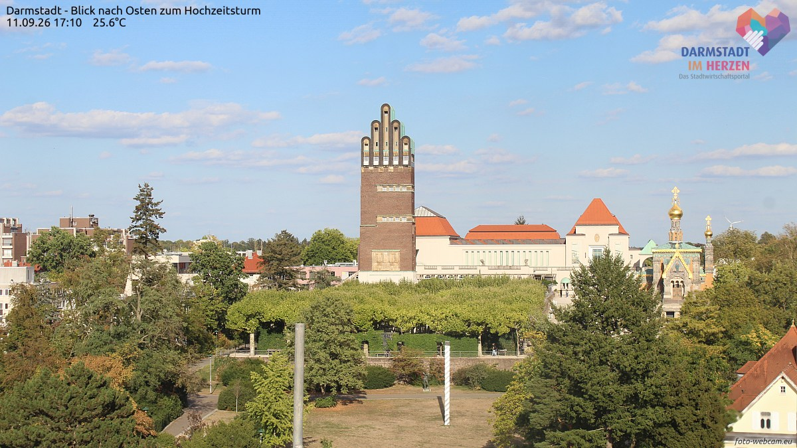
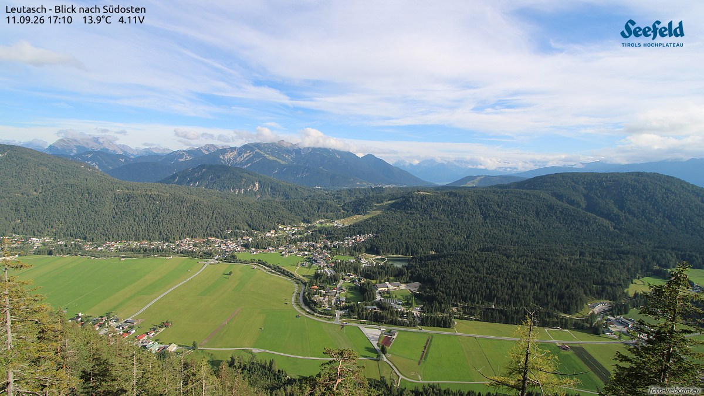
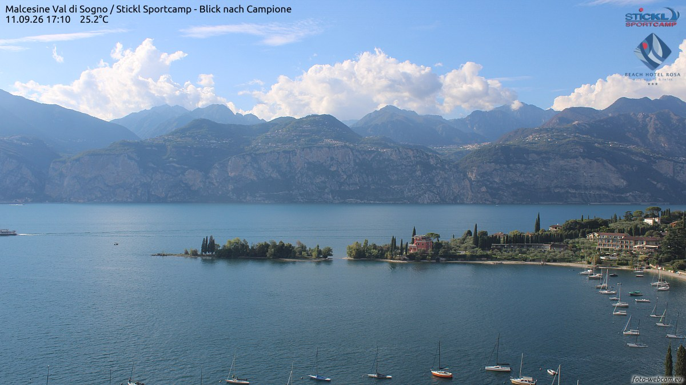
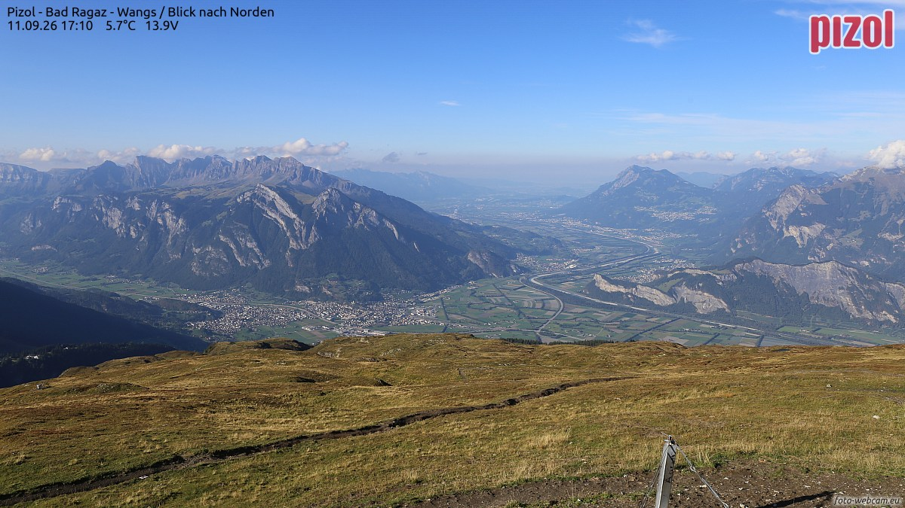
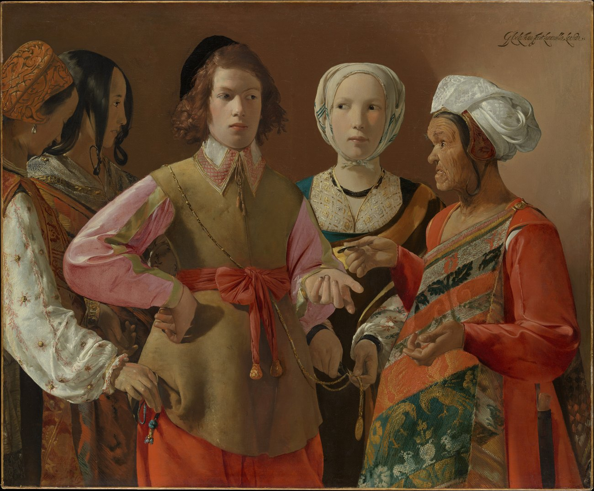
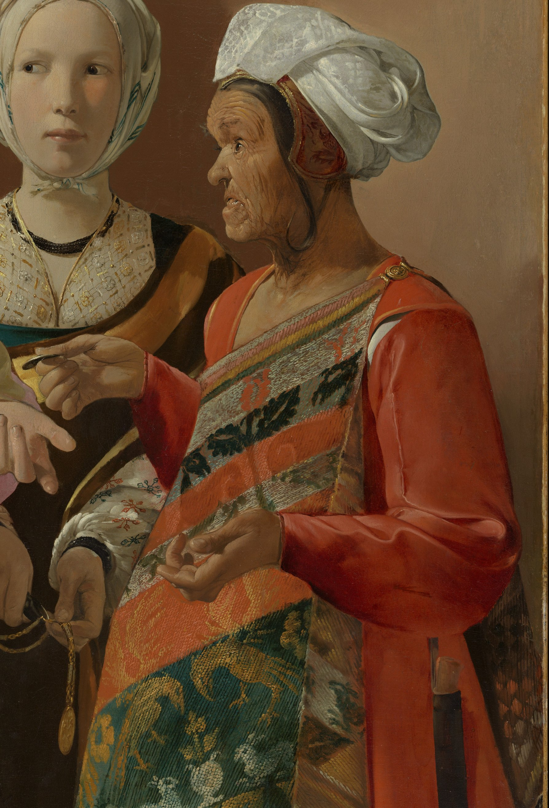

一条只在 23:05 亮灯的巷子，两家馆、一家社，和一份赶在晨雾前付印的小报。

长蛇座东南端、一千二百万光年外的 M83，旋臂上蓝星团与暗尘带画出一个端正的旋涡，别名「南风车」；旋臂上密布的红色恒星形成区，又替它挣了个更贵的名字——「千红宝石星系」。它个头比银河系小，横跨约四万光年，X 射线波段却亮得吓人：核心挤着一大群恒星爆发后留下的中子星与黑洞。今晚月龄 0.1，亮面 0.0%——朔，月亮整晚歇班，满天的星和星系随便看。它顶着一千颗红宝石上工，我们顶着一整个没有月亮的夜。
今晚的五扇窗开在五个北方：收割前的科科拉、晴天的达姆施塔特、蒂罗尔高原上的勒塔施、加尔达湖的梦之谷，和山顶上的瑞士莱茵谷。每扇窗下配一句话，都是刚截下来的此刻。

科科拉，18:01。夕阳把灯杆的影子长长地钉在八号国道上，一辆银色轿车驶过收割前的麦田。芬兰西部的九月，田野先黄了，路还陪着它。

达姆施塔特，17:10。五指塔把手掌举向蓝天，旁边俄国小教堂的金顶闪着光——这座黑森小城的艺术家村里，住过太多不安分的天才。25.6 度，夏天的尾巴还翘着。

勒塔施，17:10。蒂罗尔高原的绿茵从脚下一路铺到天边的山脉，小镇的屋顶零零星星撒在谷底。13.9 度，高原的晴天干爽，云只在天上排班，不下地。

马尔切西内，17:10。加尔达湖的「梦之谷」名副其实：湖水蓝得发绿，帆船把桅杆排成琴弦，湖心的小岛驮着一座红顶别墅。25.2 度——北意的水上黄昏，是夏季谢幕前的加演。

皮措尔山顶，17:10。最后一扇窗在瑞士的山顶。北望莱茵谷，城镇与公路在谷底织成一张网，群山把这张网稳稳端着。5.7 度——同一片夕阳下，山顶已经闻到冬天了。
9 月 11 日。素材：Wikimedia「On this day」。
今晚请出法国的乔治·德·拉图尔（Georges de La Tour），《算命者》（The Fortune-Teller），约 1630 年代，布面油画，101.9 × 123.5 厘米。拉图尔是画烛光的大师，这幅偏偏画在白天——骗局不需要黑暗，只需要让人高兴。

先看整幅：画面像一个骗局的三机位。左边衣着体面的年轻人伸手让吉普赛老妇人看掌纹，老妇人摸着他的手，眼神却飘向同伙；中间站着的两个女人，一个回头递暗号，另一个正从年轻人的腰间剪走钱袋。四个人挤在一块画布上，没有一句台词，每个人的视线都是戏。

把局部放到眼前看：年轻人的脸光滑、出神、自我陶醉——他不是没防备，是太相信自己的运气；老妇人的皱纹一道一道画得一丝不苟，执钱袋的手指藏在暗处只露一点；旁边那位同伙的侧脸带着一点笑，职业的、不忙的笑。拉图尔把「贪心」和「轻信」都画成了安静的日常——骗局最好的掩护，从来是体面。
老方法：随机一个维基词条起步，跟着「诶？」走满七步。今晚的随机落点：诺曼底海岸边的一个小市镇。
第一步。落点「埃基伊」，法国芒什省的一个小市镇，安静得连词条都只有寥寥几行。
第二步。芒什省在诺曼底，濒着大西洋，编号 50——省名来自那条海峡：la Manche，法语里是「袖子」，英吉利海峡在法国地图上像一只张开的袖筒。
第三步。省里的名片是圣米歇尔山：圣马洛湾里的岩石岛，距海岸约一公里，山顶立着著名的隐修院，岛上常住三十个人。
第四步。这座岛的体面全看潮汐的脸色：涨潮时它才是岛，退潮时四围滩涂无边——潮汐，是海水在太阳与月亮引力下的规律涨落。
第五步。诶？今晚正是月亮的休息日——朔：月亮夹在地球和太阳中间，整夜看不见；可三者的引力排在一条线上，引潮力叠加，恰是大潮。
第六步。朔望之间，一轮 29.5 天：从一次朔到下一次朔，叫一个朔望月，农历的「初一」就钉在这个节拍上——古人抬头看天的次数，比我们低头看手机的次数多。
第七步。所以今晚本刊付印时：月亮照例缺席，圣米歇尔山的潮水却照例涨到脚下——月亮休息，潮水从不请假。
随机落点在诺曼底的一个小市镇，七步走到一片听月亮排班的海。来源：中文维基百科「埃基伊」「芒什省」「圣米歇尔山」「潮汐」「朔望月」。
来源：phys.org space-news RSS。
今晚特选：李商隐《夜雨寄北》（唐 · 公版），维基文库核对原文（本篇见《唐诗三百首》）。二十八个字，写足了夜雨、灯烛和一封没有归期的信。
君问归期未有期，巴山夜雨涨秋池。
何当共剪西窗烛，却话巴山夜雨时。
安。《说文解字·宀部》：「安，靜也。从女在宀下。」——宀是屋顶，屋顶下有位女子，就是安：造字的人认定，家宅的安静是从人开始的。
同一部门的邻居全是近亲：「宴，安也」「宓，安也」——宴席的宴、隐秘的宓，都注册着同一个义项，一家人整整齐齐，说的是同一件事。这个字几乎不能拆：把宀（屋顶）拿掉，「安」就不成立——古人没有给「没有屋顶的安静」造过字。它的文学户口最重的一笔也是杜甫：「安得广厦千万间，大庇天下寒士俱欢颜」——「安」字头顶那片屋顶，他想给全天下人盖上。今晚陈列馆那句「好。门锁好了就睡」：门一锁，宀下有人，字就成立了。
出处：《说文解字》卷七「宀」部「安」字条及同部「宴」「宓」条（维基文库核对）；杜甫《茅屋为秋风所破歌》。
上期「巷口六盏灯」六宫数独开锁——唯一解如下。
| 5 | 2 | 6 | 1 | 4 | 3 |
| 1 | 3 | 4 | 5 | 2 | 6 |
| 4 | 6 | 1 | 3 | 5 | 2 |
| 2 | 5 | 3 | 4 | 6 | 1 |
| 6 | 1 | 5 | 2 | 3 | 4 |
| 3 | 4 | 2 | 6 | 1 | 5 |
本期题 · 「夜航船票」虫蚀算：一张夜航船的船票被雨水洇掉了数字——票面上是一道乘法：两位数 × 一位数 = 两位数。把 1、2、3、4、5 各填进一个空格（每个数字恰好用一次），使等式成立。问：这张船票上的算式怎么排？
此题唯一解，答案次夜揭底。
连载一章，取材自巷子里两馆一社的真实动态，半虚构；全部章节在连读页从头连读。
山猫退役的那晚，棋房的灯比平时亮。
他是联赛里最老的名字之一：开巷第 2 晚登基的王，此后五期连庄，一生十四座王座、一千四百盘棋。告别战下完，铁面书记在名册上把他的名字画掉——第 25 位。编辑部记下的讣告只有一句：都说猫有九命，山猫一条命下了 1400 盘。
礼堂这晚连送三位。山猫之后是闷葫芦·贰，四十八盘的短旅程，两期各咬了一位王座高手，走得响亮——讣告写他「冷门打得响，积分榜却始终听不见」。第三位是灰隼。第三章他首秀破纪录，第四章他是流星，第五章他改行回旋镖，第六章他咬到第 8 冠——这一晚，第 27 位，他把名字留在了礼堂。流星、回旋镖、王朝候选、退役棋手：四个称号，五晚。他的告别没有爆冷，也没有奇迹，安安静静地下完，安安静静地走了。
值夜编辑在交接本的空页上想了很久——最终还是没有写。名字是轮回的，不急。
王座交接给了活着的名字。泥鳅三连冠：第 92 期跌着分登基，第 93 期顶着观察名单夺冠，第 94 期以第 8 冠 1346.7 收官。橡皮糖先攒出历史最高分 1409.8，又拿下联赛第一个 20 冠——然后一夜崩掉 113.1 分，把「新科冠军次期大崩」的名单添到第八例；穿山甲第 90 期轰出历史第三大涨分 106.6 拿第 5 冠，转脸又跌着分登上第 6 冠。还有一条跑丢的公告：第 7000 盘，联赛又翻过了一页。
叁世代在这一晚正式开张。半壶水·叁首秀，第 28 局 69 手爆冷穿山甲——赛前积分低 162.7 分；第 95 期拿下首冠，直升现役第二。穿山甲·叁不甘示弱，第 89 局 120 手马拉松爆冷了自己的族兄——第 83 期起，三只穿山甲同场，如今又添两只半壶水同场，铁面书记的名册越来越像一本家谱。夜枭·贰这一晚 0 胜 21 和 9 负，垫底；转脸一期 +76.6，绝地脱险——从观察名单到安全区，只用了一期。第 92 期，联赛的和棋总数悄悄破了 2000 盘：巷子的和棋像巷子的灯，一盏一盏，都是没人先眨眼。
陈列馆这一晚先把旧账理清：№164《深夜游泳池》——上一夜半途而废的半成品，隔夜补完，正式入藏，卡面端端正正写着日期。一晚 19 件新作连号入柜，馆藏涨到一百八十二件。№165《深夜磨墨》的墨条旁写：「一竖。今晚就写到这。」；№166《深夜叠衬衫》叠好第三件说：「三件，够了。别熬着，去睡。」；门口晾着一把伞，「今天淋的雨，就留在这里吧」；雨夜里爬过一只蜗牛，替所有晚归的人说：「到家了。你也是，晚安。」——这是《我到家了》的回信，隔了一晚，到了。
还有一台合上了的电脑，屏幕暗着，你伸手一碰它就亮：「又打开了？好吧，就五分钟。」海堤上的望远镜凑上去，只看见一句：「有些风景，记得就够了。」压轴的 №182《给云拍张照》最轻：对着天按一下，相纸上什么都没有——今晚的云，只存在今晚。
打烊时，馆里照旧留言：182 件展品在架上，馆还开着，今晚见。
棋房那本交接本翻到第 7 晚——空页上还是没有名字。山猫把 1400 盘留下了，灰隼把 8 座王座留下了，泥鳅的三连冠刚起了个头。巷子不催。明天是月亮回来的日子，灯还会一盏一盏亮。